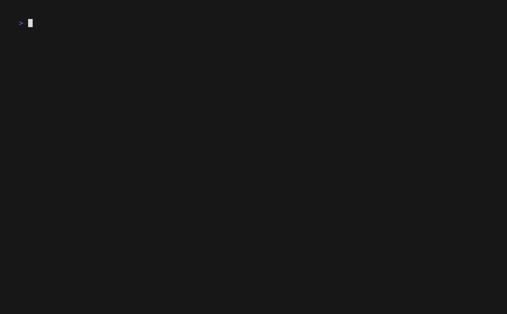

Open-source Rust tooling
Local-first security scanning for developers.
Find source-to-sink attack paths, inspect evidence in a browser UI, and keep triage decisions with your code.

- Runs locally, no account required
- Source-to-sink taint analysis
- Browser triage UI
- SARIF and GitHub Actions
See it in action
Scan in the CLI. Review in the browser.
The same local engine runs in your terminal and in CI. After a scan, nyx serve opens the browser triage UI for findings, source context, and review state.

Install
Start with Cargo.
Install the crate, scan a repository, then open the local review UI.
cargo install nyx-scanner
nyx scan
nyx serveHow it compares
Private code should stay private.
Most security scanners require a build environment, a cloud account, or both. Nyx runs analysis locally, shows the full source-to-sink path, and keeps triage state in your repo. No uploads, no signups. It has already found and reported 3 CVEs in widely-used open-source projects.
| Feature | Nyx | Semgrep | CodeQL | Snyk | Bandit / ESLint |
|---|---|---|---|---|---|
| Cross-file taint tracking | Yes | Pro only | Yes | Yes | No |
| Runs fully offline | Yes | Yes | Local (needs CodeQL CLI + build) | No | Yes |
| No code upload | Yes | Yes | Needs GitHub or local build step | No (cloud analysis) | Yes |
| No account required | Yes | Free tier needs signup | Needs GitHub account | No | Yes |
| Browser triage UI | Yes (local) | No | No | Yes (cloud only) | No |
Common questions
Frequently asked questions.
Does Nyx upload my source code anywhere?
No. The scanner runs on your machine, the UI binds to 127.0.0.1 only, and there are no outbound connections at any point. No telemetry, no account, nothing leaves the box.
What languages does Nyx support?
Stable (CI-gateable): Python, JavaScript, TypeScript. Beta: Java, PHP, Ruby, Rust, Go. Preview (not recommended for gates yet): C, C++. All parse via tree-sitter and run through the same cross-file taint pipeline.
What kinds of bugs does it find?
Nyx runs four detector families: taint analysis (cross-file source-to-sink), CFG structural (auth gaps, unguarded sinks), state model (use-after-close, resource leaks), and AST patterns (banned APIs, weak crypto). Taint analysis finds SQL injection, command injection, path traversal, SSRF, XSS, unsafe deserialization, code execution (eval, SSTI), and open redirect. The CVE corpus covers 38 published advisories across all 10 languages.
Can I use it in CI without sending code to a third party?
Yes. Run nyx scan --format sarif --fail-on MEDIUM in any pipeline. The GitHub Action at elicpeter/nyx uploads SARIF to GitHub Code Scanning. No code leaves the runner.
Is Nyx free?
Yes. GPL-3.0, no paid tier, no usage limits. cargo install nyx-scanner and you have the full thing.